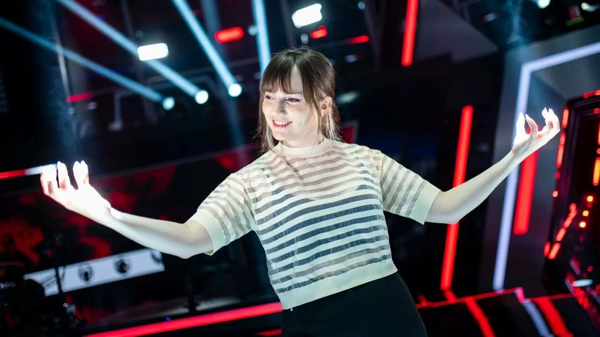
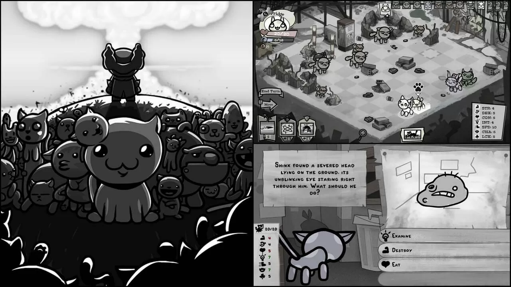
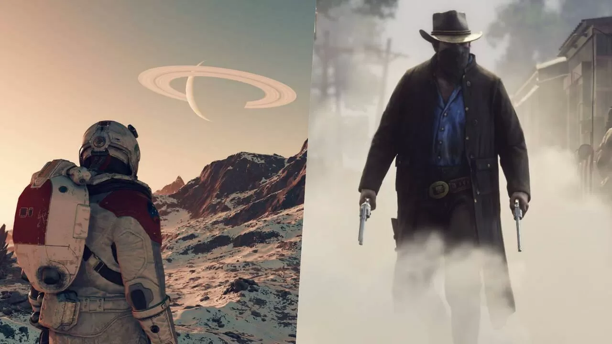
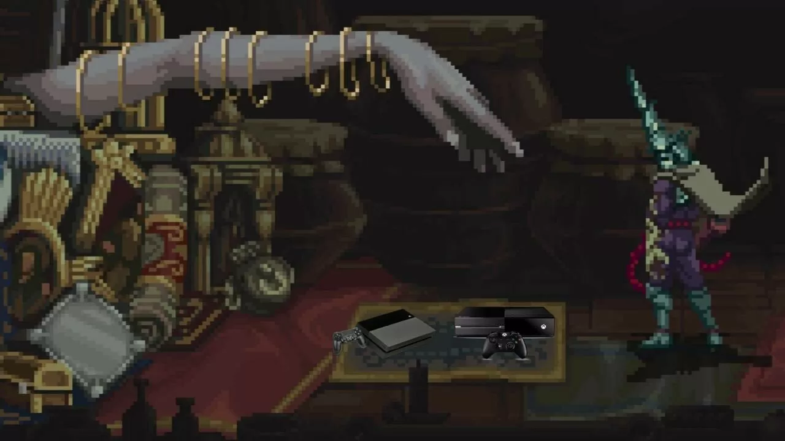
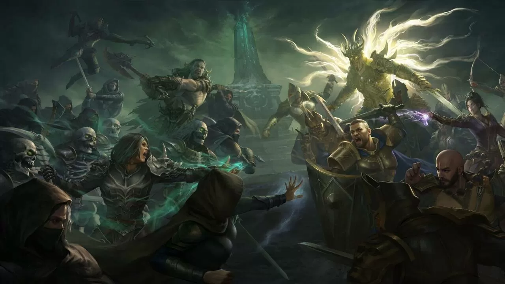

Lo más reciente

Sara Borondo
Desde hace año y medio forma parte del equipo de la Liga de Videojuegos Profesional que comenta las retransmisiones del esport de Riot Games.

Fran G. Matas
Mewgenics, un proyecto que anunció hace casi una década, es lo nuevo de Edmund McMillen, un 'roguelike' con combates estratégicos protagonizado por gatitos.

Fran G. Matas
Todd Howard de Bethesda Game Studios argumenta que Starfield, el RPG para Xbox Series y PC, se parece a los "juegos que te colocan en un mundo, que te transportan a un lugar".

Fran G. Matas
El estudio sevillano The Game Kitchen ha anunciado que han comenzado a trabajar en las versiones para las consolas de la pasada generación; en agosto se lanzará en otras plataformas.

Fran G. Matas
La firma de análisis del mercado móvil data.ai añade que es el decimoquinto título que más rápido ha alcanzado esa cifra; se ha descargado más de 22 millones de veces en todo el mundo.

Fran G. Matas
Jason Barnes, animador en el juego de Rockstar Games, rinde tributo a su mascota en una emotiva publicación en Instagram de la que se ha hecho eco inXile, donde Barnes es director de animación.